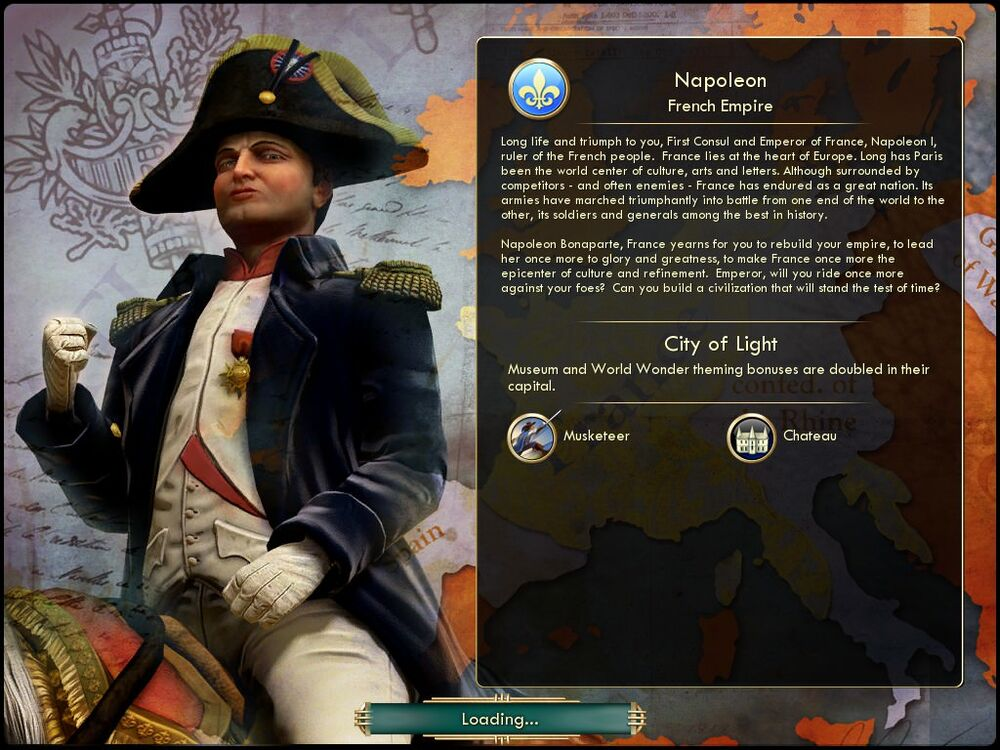

나폴레옹 Napoleon프랑스 France |
|  |
| 최고의 집정관이자 프랑스의 황제, 프랑스 국민의 통치자이신 나폴레옹 1세 폐하, 오래도록 승리를 누리십시오. 프랑스는 유럽의 심장입니다. 오랫동안 파리는 세계의 문화와 예술 그리고 문학의 중심이었습니다. 비록 경쟁자들과 적들에게 둘러싸여 있으나 프랑스는 위대한 나라로서 그것을 견뎌왔습니다. 프랑스의 군대는 전 세계의 전장을 당당하게 누볐으며 역사적으로 최고라 할 수 있는 병사와 장군을 보유하였습니다.
나폴레옹 보나파르트여, 프랑스는 그대가 제국을 재건하여 다시 한번 영광과 위대함, 그리고 세련된 문화와 품위가 가득한 국가로 만들어 주기를 갈망합니다. 적들에 맞서 시대의 한계를 뛰어넘는 문명을 건설해 주시겠습니까? |